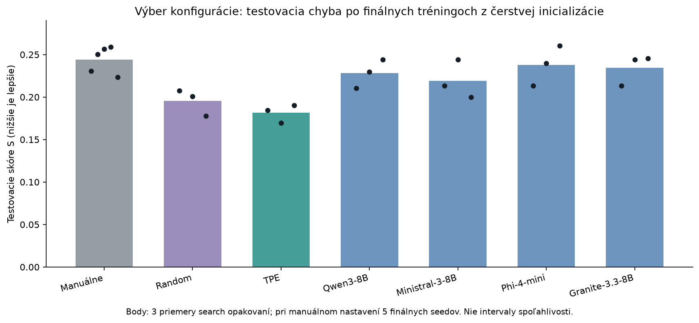
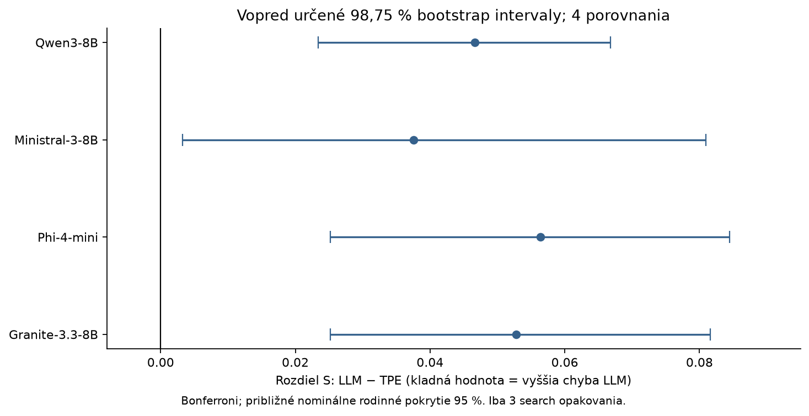
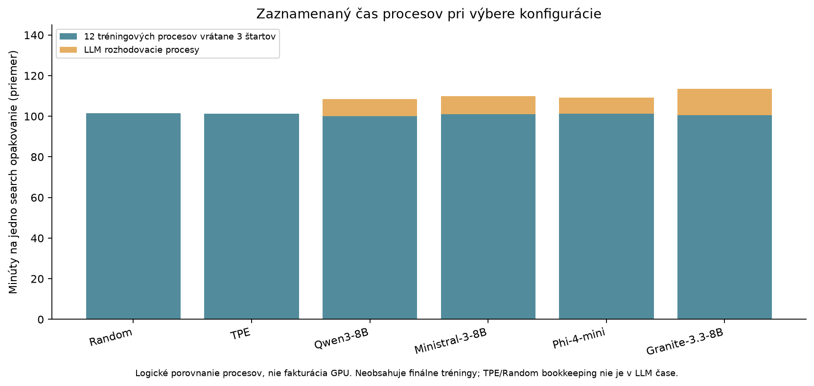
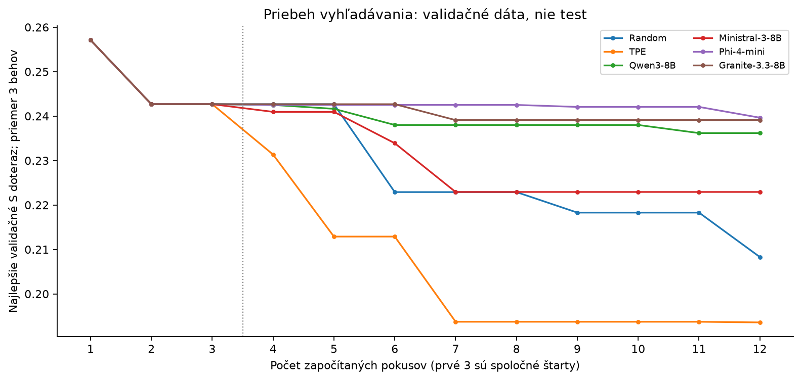
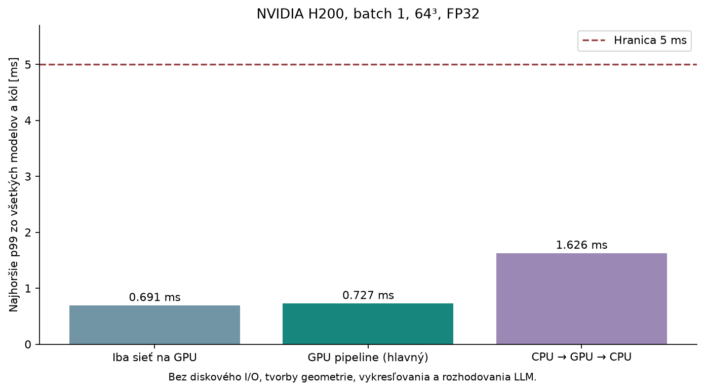

Lokálne LLM pri výbere konfigurácie FNO
Porovnávací report · FlowBench · 22. 10. 2026 · bez nových GPU behov1. Čo sme skúmali
Skúmali sme, či lokálne LLM dokážu pri obmedzenom počte pokusov vybrať lepšie tréningové nastavenia pevnej neurónovej siete než manuálne nastavenie, náhodné hľadanie a TPE. LLM nepočítali prúdenie, nevytvárali rovnice ani nemenili architektúru. Zo zaznamenanej validačnej histórie navrhovali learning_rate, weight_decay, pressure_weight a divergence_weight.
Úloha: ustálené 3D prúdenie FlowBench na mriežke 64³. Vstupom je geometria opísaná SDF a Reynoldsovo číslo, výstupom u, v, w a tlak. Ide o dátovo trénovanú FNO s voliteľným divergenčným regularizačným členom v stratovej funkcii, nie o experiment s generovaním PDE alebo všeobecný dôkaz o PINN. V tomto reporte nie je vlastné časovo závislé CFD ani voľná hladina.
Použité lokálne modely: Qwen/Qwen3-8B, mistralai/Ministral-3-8B-Instruct-2512, microsoft/Phi-4-mini-instruct a ibm-granite/granite-3.3-8b-instruct. Presné revízie, loader a generovanie sú uložené v report_inputs.json; bez plateného LLM API. Spoločné generovanie: do_sample=false, max_new_tokens=512, najviac jedna oprava formátu. Qwen a Granite mali vypnutý thinking režim podľa konfigurácie.
2. Ako bolo porovnanie urobené
Dáta sa delili podľa geometrie: 700 tréningových, 150 validačných a 150 testovacích prípadov. Test tvorí 15 geometrií × 10 Reynoldsových čísel. Normalizácia je výlučne z tréningu; výber konfigurácie a checkpointu používal iba validáciu.
Každá zo šiestich vyhľadávacích metód mala 3 opakovania a 12 započítaných pokusov: 3 spoločné štarty + 9 ďalších návrhov. Každý tréning mal 20 epoch a rovnakú FNO: width=12, layers=2, modes=4, batch=1. Limit tréningových procesov bol 7200 s na metódu/opakovanie; LLM mali samostatný rozhodovací limit 1890 s. Všetky behy skončili na limite 12 pokusov, nie vyčerpaním tréningového času. Preto ide hlavne o porovnanie pri rovnakom počte pokusov, NIE pri rovnakom celkovom end-to-end čase.
Najlepšia validačná konfigurácia z každého hľadania sa trénovala znovu s 5 čerstvými seedmi 410001–410005; manuálna konfigurácia tiež s 5 seedmi. Spolu je 95 logických výsledkov, ale len 70 fyzických modelov: 25 dodatočných odkazov opakovane používa identický model. Aliasy nie sú nové nezávislé vzorky. Celá tréningová fáza obsahovala 9 spoločných + 162 adaptívnych + 70 finálnych tréningov.
S = 0,5 Eu + 0,5 Ep; menšie je lepšie. Eu je relatívna L2 chyba spoločného vektora rýchlosti, Ep relatívna L2 chyba tlaku po odstránení tlakovej konštanty, iba v kvapaline. Redukcie sú float64. Najprv sa priemeruje 10 Re v geometrii a potom geometrie rovnakou váhou. Divergencia je len diagnostika; nie dôkaz fyzikálnej správnosti.
3. Testovacia presnosť
Nasledujúce hodnoty sú priemery cez všetkých 15 testovacích geometrií, 3 search opakovania a 5 finálnych seedov; pri manuálnom nastavení cez geometrie a 5 seedov. Percento je relatívny rozdiel priemerného skóre S voči TPE, nie percento nesprávne predikovaných buniek.
TPE malo najnižšie priemerné S aj obe zložky chyby. Random bol v priemere druhý; toto poradie je opisné, nie nové potvrdzujúce štatistické porovnanie. Všetky LLM mali vyššiu chybu než TPE. Ich priemerné S bolo nižšie než manuálny základ, ale ich chyba rýchlosti bola vyššia než pri manuálnom základe: nižšie kombinované S preto netreba zamieňať za zlepšenie každej fyzikálnej veličiny.
| Metóda | S | Eu | Ep | Rozdiel S vs. TPE |
|---|
| Manuálne | 0,2441 | 0,1190 | 0,3691 | +34,5 % |
| Random | 0,1954 | 0,1265 | 0,2642 | +7,7 % |
| TPE | 0,1815 | 0,1125 | 0,2504 | — |
| Qwen3-8B | 0,2281 | 0,1215 | 0,3347 | +25,7 % |
| Ministral-3-8B | 0,2190 | 0,1238 | 0,3143 | +20,7 % |
| Phi-4-mini | 0,2378 | 0,1224 | 0,3533 | +31,1 % |
| Granite-3.3-8B | 0,2343 | 0,1198 | 0,3488 | +29,1 % |

4. Vopred určené porovnania LLM proti TPE
Použil sa pôvodný krížený párovaný bootstrap: 10 000 replikácií, seed 510001, samostatné resamplovanie osí geometria × search opakovanie × finálny seed; rovnaké indexy pre všetky metódy. Štyri dvojstranné 98,75 % intervaly používajú Bonferroniho úpravu s približným nominálnym rodinným pokrytím 95 %.
Všetky štyri intervaly rozdielu S(LLM) − S(TPE) sú nad nulou. V rámci vopred určeného vyhodnotenia teda výsledok neukazuje prínos LLM oproti TPE; ukazuje smer k vyššej chybe LLM. Je to výsledok tejto úlohy a protokolu, nie tvrdenie, že LLM nemôžu pomôcť pri iných úlohách. Pokrytie bootstrapu je približné a iba 3 search opakovania obmedzujú istotu záveru. Formálne znenie dizertačných hypotéz sa tu nemení.
| LLM | Priemer LLM − TPE | 98,75 % interval | Smer |
|---|
| Qwen3-8B | 0,0466 | [0,0234; 0,0668] | celý interval nad 0 |
| Ministral-3-8B | 0,0376 | [0,0032; 0,0809] | celý interval nad 0 |
| Phi-4-mini | 0,0564 | [0,0252; 0,0844] | celý interval nad 0 |
| Granite-3.3-8B | 0,0528 | [0,0252; 0,0816] | celý interval nad 0 |

5. Koľko stál výber konfigurácie
Časy nižšie sú priemerné zaznamenané časy procesov na jedno search opakovanie. Tréning zahŕňa všetkých 12 pokusov vrátane logicky započítaných spoločných štartov. Rozhodovanie LLM zahŕňa samostatné spustenie návrhového procesu, načítanie modelu, generovanie a prípadnú opravu. Generovanie samotné je vykázané zvlášť v ďalšej tabuľke.
Toto nie je priama fakturácia GPU ani nástenný čas paralelného experimentu. Spoločné štarty sa fyzicky spustili iba raz pre opakovanie. Random/TPE nemajú samostatne meraný LLM proces; nula neznamená nulové CPU náklady algoritmu a obsluhy. Finálne tréningy a záverečné merania nie sú zahrnuté v tejto tabuľke. Presné alokačné a finálne tréningové údaje sú v comparison_numbers.json a report_inputs.json. Manuálny základ nemal automatické hľadanie; ľudský čas prípravy sa nemeral.
Použitý proces načítaval lokálny LLM pre každý návrh znovu. Studený štart a súborová cache ovplyvnili časy; perzistentne načítaný LLM by mohol znížiť prevádzkovú réžiu. Tento experiment však takú optimalizáciu nemeral a neukazuje, že by sama zlepšila kvalitu návrhov.
| Metóda | Tréning [min] | LLM procesy [min] | Súčet [min] |
|---|
| Random | 101,52 | 0,00 | 101,52 |
| TPE | 101,35 | 0,00 | 101,35 |
| Qwen3-8B | 100,04 | 8,53 | 108,57 |
| Ministral-3-8B | 100,97 | 9,02 | 109,98 |
| Phi-4-mini | 101,18 | 8,10 | 109,28 |
| Granite-3.3-8B | 100,47 | 13,14 | 113,61 |

6. Platnosť odpovedí a merané zdroje LLM
Všetkých 108 návrhov bolo po povolenej oprave použiteľných; 103 nepotrebovalo opakovanie generovania a 5 potrebovalo jednu opravu, všetkých päť pri Granite. To nie je to isté ako 100 % striktný JSON hneď v surovom prvom výstupe: spoločná transportná vrstva vedela odstrániť jeden úplný JSON code fence. Ministral vo všetkých 27 prvých odpovediach použil JSON code fence, ktorý odstránila transportná vrstva bez opakovania generovania. Počty surového JSON sú v tabuľke; tokeny sú zachované v číselných prílohách. Všetky evidence_ids odkazovali na dostupnú dokončenú históriu; to nepotvrdzuje pravdivosť slovného zdôvodnenia. Adaptívne tréningy nemali neúspešný pokus.
Čas je medián na jeden z 27 návrhov danej rodiny. Generovanie zahŕňa aj opravu, ak bola potrebná. VRAM je maximum vzorkovaného procesového NVML merania, nie garantovaný presný okamžitý peak; rovnaké obmedzenie platí pre vzorkovanú RAM. CPU čas, RAM a počty tokenov sú tiež uložené v comparison_numbers.json.
| LLM | Proces [s] | Generovanie [s] | Max. vzork. VRAM [GiB] | Prvý raw JSON | Opravy |
|---|
| Qwen3-8B | 52,2 | 42,9 | 16,77 | 27/27 | 0/27 |
| Ministral-3-8B | 56,6 | 45,9 | 19,71 | 0/27 | 0/27 |
| Phi-4-mini | 50,0 | 39,8 | 8,25 | 27/27 | 0/27 |
| Granite-3.3-8B | 71,7 | 60,3 | 17,07 | 22/27 | 5/27 |
7. Čo LLM pri hľadaní robili
Výrazným pozorovaním je opakovanie rovnakých konfigurácií. Počet jedinečných konfigurácií v troch behoch je uvedený oddelene; porovnávajú sa presné numerické hodnoty všetkých štyroch parametrov. Duplicitný adaptívny návrh už bol v histórii toho istého behu; stále sa trénoval s iným seedom a spotreboval celý pokus.
Niektoré rodiny tak venovali väčšinu pokusov opakovanému tréningu podobného alebo rovnakého nastavenia, zatiaľ čo Random a TPE skúšali nové konfigurácie. Je to možný mechanizmus slabšieho výsledku, nie preukázaná príčina: pri každom tréningu sa menil aj seed a neprebehla ablačná štúdia so zákazom duplicít. Víťaz zo spoločných štartov znamená, že dodatočné návrhy v danom behu neprekonali najlepší spoločný validačný výsledok.
| Metóda | Jedinečné z 12: behy 1/2/3 | Duplicitné nové návrhy | Víťaz zo štartov |
|---|
| Random | 12/12/12 | 0/27 | 0/3 |
| TPE | 12/12/12 | 0/27 | 0/3 |
| Qwen3-8B | 4/3/3 | 26/27 | 0/3 |
| Ministral-3-8B | 10/10/9 | 7/27 | 2/3 |
| Phi-4-mini | 4/4/4 | 24/27 | 1/3 |
| Granite-3.3-8B | 4/5/4 | 23/27 | 2/3 |

8. Sú uložené aj zdôvodnenia?
Áno. Uložený je verejný štruktúrovaný výstup reason, evidence_ids, expected_effect a risk, vstupná história, surové odpovede, chyby a opravy. Nie je to skrytý vnútorný myšlienkový postup modelu. Uvedené tvrdenia o očakávanom účinku sú návrhy LLM, nie kauzálne potvrdené vysvetlenia.
Nasledujúce príklady boli vybrané pevným pravidlom: prvý adaptívny návrh v prvom opakovaní každej rodiny, nie podľa toho, či vyzeral úspešne. Originálne anglické formulácie sú ponechané bez prikrášlenia. Rozdiel validačného výsledku jedného tréningu je ovplyvnený aj seedom.
Qwen3-8B:
reason: Higher pressure_weight and divergence_weight may improve S by emphasizing pressure and divergence terms.
expected_effect: Potential reduction in S by balancing pressure and divergence contributions.
risk: Increased risk of overfitting with higher pressure_weight and divergence_weight.
evidence_ids: r0_s01, r0_s02
Najlepšie pred návrhom S=0,229087; následný validačný tréning návrhu S=0,233646.
Ministral-3-8B:
reason: Lowered learning rate to stabilize training while reducing weight decay to avoid over-regularization. Increased divergence_weight to enforce physical constraints and pressure_weight to balance pressure error contribution, targeting better S with improved divergence control.
expected_effect: Better S by reducing velocity/pressure error imbalance and improving divergence while avoiding overfitting.
risk: Potential instability from higher divergence_weight or slower convergence if learning_rate is too low.
evidence_ids: r0_s00, r0_s01, r0_s02
Najlepšie pred návrhom S=0,229087; následný validačný tréning návrhu S=0,361638.
Phi-4-mini:
reason: Previous trials with lower divergence_weight and higher pressure_weight showed better S values.
expected_effect: Improved S by reducing divergence and emphasizing pressure error.
risk: May increase velocity error slightly.
evidence_ids: r0_s00, r0_s02
Najlepšie pred návrhom S=0,229087; následný validačný tréning návrhu S=0,236493.
Granite-3.3-8B:
reason: Based on the history, a learning rate of 0.001 and a weight decay of 0.0001 have shown promising results with minimal pressure error. The pressure weight of 1 aligns with the current objective function. No divergence weight is used as it's not a primary concern.
expected_effect: Improved S score due to lower pressure error
risk: Potential overfitting with high weight decay, mitigated by the chosen low value
evidence_ids: r0_s00, r0_s01
Najlepšie pred návrhom S=0,229087; následný validačný tréning návrhu S=0,234024.
9. Splnenie hranice 5 ms
Všetkých 70 fyzických modelov splnilo hlavné kritérium: GPU pipeline synchronized wall p99 ≤ 5 ms V KAŽDOM z troch kôl. Uložených a znovu overených je 630 000 jednotlivých časovaní plus 63 000 zahrievacích volaní. Tabuľka uvádza najhorší p99 naprieč všetkými modelmi a kolami, nie najhorší jednotlivý čas. p99 nie je tvrdá garancia, že každé volanie bude pod hranicou.
Hlavný GPU režim zahŕňa normalizáciu, koordinátové vstupy, sieť a denormalizáciu, pričom vstupy sú už na GPU. CPU → GPU → CPU zahŕňa prenosy a je sekundárny. Nie je zahrnuté čítanie z disku, vytváranie SDF, vizualizácia ani rozhodovanie LLM. Hardvér je H200, batch 1, 64³, FP32, TF32 vypnuté. Tri kolá časovania nie sú tri nezávislé vedecké replikácie.
Rýchlosť medzi metódami veľmi nerozlišuje, pretože všetky používajú tú istú architektúru a veľkosť vstupu. Splnenie 5 ms preto nemožno pripísať LLM ani ním dokazovať prínos LLM pri hľadaní konfigurácie.
| Režim | Najhorší p99 [ms] | Modely s p99 ≤ 5 ms v každom kole |
|---|
| model_only | 0,6914 | 70/70 |
| gpu_pipeline | 0,7273 | 70/70 |
| host_to_host | 1,6263 | 70/70 |

10. Čo musíme priznať a čo ešte nevieme
Meranie malo dve technické prerušenia. Prvé bolo pred dátami pre import pomocnej knižnice. Druhé už otvorilo prvý testovací prípad [10] a zlyhalo pri nesprávnom rozmere masky diagnostiky divergencie. Neuložilo skóre modelu a neslúžilo na zmenu modelov. Opravený výpočet sa zhodoval s pôvodným trénerom na všetkých 150 validačných prípadoch; až po výslovnom súhlase používateľa sa test zopakoval. Staré claims, autorizácie a chyby ostali zachované. Test nesmieme opisovať ako nikdy predtým ani čiastočne otvorený.
Rozsah záveru obmedzuje jedna úloha, jedna pevná FNO, 3 search opakovania, 20-epochový tréning a krátke vyhľadávanie. Test má nové geometrie z existujúceho rozdelenia; nepreukazuje všeobecnú generalizáciu na nové rodiny geometrie alebo iné fyzikálne režimy. Referenčné dáta sú prevzorkované na 64³; nejde o nový dôkaz vernosti voči pôvodnému numerickému riešeniu. Štúdia nepokrýva voľnú hladinu, časový rollout ani generovanie rovníc.
Podmienky generovania boli spoločné, no rodiny sa líšia veľkosťou a loaderom. Hodnotíme konkrétne lokálne modely s konkrétnym promptom a dekódovaním, nie čistý izolovaný účinok architektúry LLM. Vyhľadávacia stabilita, duplicity a racionalizácie sú dodatočný opis už hotových behov, nie nové potvrdzujúce hypotézy.
11. Záver a najbližší postup
Technicky je táto FlowBench sada dokončená, vrátane presnosti, zdrojov, zdôvodnení a rýchlosti. V tomto protokole LLM neprekonali TPE a pridali čas na rozhodovanie. Pozitívny výsledok je reprodukovateľná prevádzka štyroch lokálnych rodín a splnenie cieľa rýchlej inferencie; to však nenahrádza výsledok porovnania presnosti. Aj dobre zdokumentovaný negatívny výsledok má výskumnú hodnotu.
Teraz treba uzavrieť túto sadu ako nemenný výsledok, skontrolovať tabuľky a grafy s vedúcim a až potom rozhodnúť o ďalšej nezávislej úlohe. Ak by sme skúmali napríklad zákaz duplicitných návrhov alebo perzistentný LLM proces, pôjde o nový, vopred opísaný experiment; nepoužijeme tento už otvorený test na ladenie a nebudeme ho zamieňať za opravu pôvodného výsledku. Žiadne nové GPU úlohy tento report nespúšťa.
Zaúčtovanie celého hlavného experimentu: 37,0225 GPU-h z interného limitu 70 h; zostáva 32,9775 GPU-h. Súčet obsahuje aj osem starších konzervatívnych plných rezervácií, nie pri každej historickej položke presný runtime. Úspešná validačná kontrola + finálny test + latencia spotrebovali spolu 717 GPU-s; technické neúspešné pokusy zostali započítané.
12. Podklady a reprodukovateľnosť
Všetky číselné podklady sú v report_inputs.json (iba malé metadáta a reporty, nie CFD polia alebo váhy) a odvodené tabuľky v comparison_numbers.json. report_inputs.json obsahuje SHA-256 všetkých 359 načítaných podkladov vrátane jednotlivých LLM návrhov a ich spätnej väzby. input_receipt.json overuje celý balík. Sú zachované surové verejné odpovede, tokeny, zdroje a všetkých 108 návrhov.
Grafy sú uložené ako PNG aj SVG. Kód: test/analysis/collect_main_report_inputs_v1.py a build_comparative_report_v1.py. Prehľad reportu je v report.txt a report.html. JSON čísla majú plnú presnosť, textové tabuľky sú zaokrúhlené. Pôvodné merania ostávajú na Perune vo final_measurements_v3. Žiadne veľké polia ani modelové váhy neboli stiahnuté.
SHA-256 vstupného balíka: d3ec70958151c8988286b1f6aa518f61862373b242881c77fe2349d956fe9da1